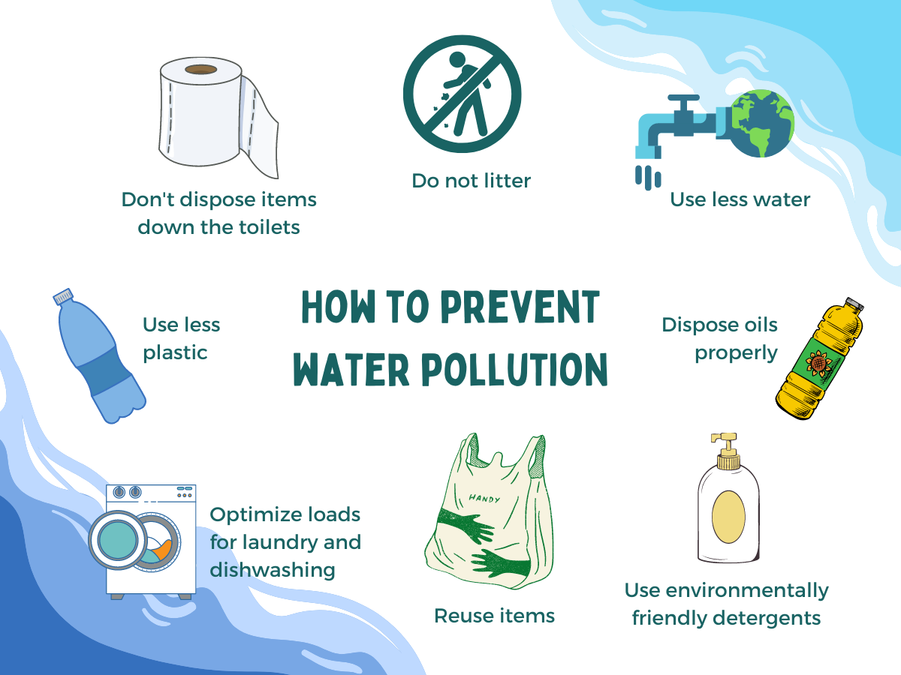

Control Measures of Water Pollution
Since we have understood the concept of water pollution, let us look into some of the actions taken to control water pollution. Prevention and control of water pollution could be done in so many ways. To start off, it is to plant more trees around water bodies as they naturally help to assimilate and recycle the pollutants. Some important points are summarized below.
There is a plant known as ‘Water Hyacinth’ that absorbs dissolved toxic substances like cadmium and mercury from water bodies, thus actively removing pollutants from water.
It is important to dispose-off waste carefully and not to dump it directly into water bodies, without proper waste treatment.
Industries should treat their wastes carefully before disposing of chemicals and other materials into water bodies directly. Sewage treatment plants and wastewater treatment plants in industries are established to treat the water used so it can be safely mixed into the river streams. It also enables water recycling.
Using natural fertilizers and pesticides as substitutes for chemical ones is good for plants and water.
Chemical processes such as coagulation, ion exchange method, reverse osmosis, etc. will greatly reduce the level of water pollution.
Lastly, it is better to reduce the consumption of water in our daily activities and reuse water whenever possible to reduce the overall level of pollution.
In conclusion of the article, it can be said that we have learned about what is water pollution and the control measures taken to reduce it. Case studies of water pollution are also mentioned in the article.
